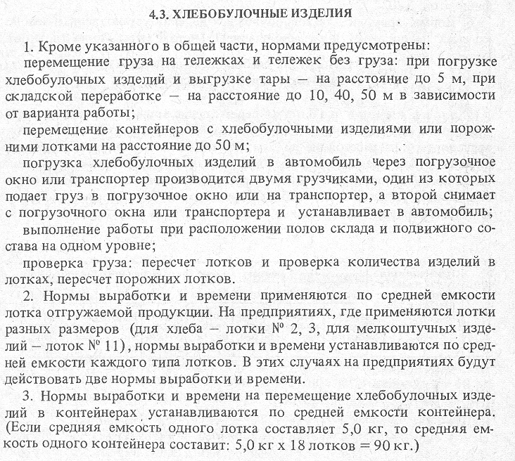
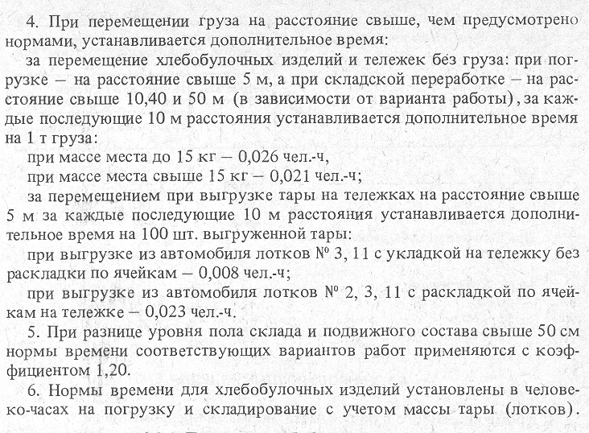

4.3.1. Погрузка хлебобулочных изделий в автомобильный транспорт
4.3.2. Погрузка-выгрузка контейнеров ХКЛ-18
4.3.3. Выгрузка тары (лотков) из автомобиля
4.3.4. Перекладка груза, комплектование заказов и перемещение на тележках